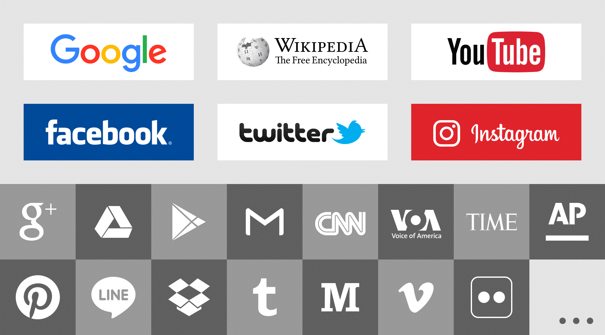

Our Philosophy: Yearning for freedom¶
Freedom, equality, openness, sharing are not just personal values and ideological preferences. These things are written in the basic protocols of the Internet and are the inevitable results of the design of early talents. A network can be as big as it is today, and there is no central government, no parliament and political bureau, not ideological and administrative relations at work, but a series of basic communication protocols.
An e-mail which is came from Microsoft 1 can be sent to Gmail 2, because there are many intermediate servers that carry the delivery task. This delivery is neither a business task nor an administrative task. It does not bring direct commercial benefits. There is any administrative affiliation. The existence of this open network, just because if you want to participate in this game, you must accept these open game rules.
The giants on the Internet, such as Google 3 and Facebook 4, are not the beneficiaries of the open architecture of the Internet. Whether it is from Pratt & Whitney, or from the perspective of providing more business opportunities, the open and free Internet spirit will really benefit us.
Perhaps not everyone agrees with these viewpoints. In some areas, for some reasons, ISP services are more like a large local area network. They are not as interconnected and open-minded as the original design of the Internet. As a group of technology geeks, although we can understand it, but we are more and more looking forward to enjoying an Internet infrastructure that is exactly the same as the original design, free, open, equal, and shared.
{kind=link}
Same like you, our team members also need accessibility, stable and fluent network communication services, explore the world through Google 3 and Wikipedia 5, share our work and life times with friends all over the world on Facebook 4 / Instagram 6, Using YouTube YouTube 7 / Twitter 8 to see a colorful world, you and us, can not only understand the latest technological trends, academic research, cutting-edge information, but also freely communicate, discuss and collaborate.
The Internet belongs to all those who construct and use it. The future of the Internet should not be abducted and controlled by any centralized organization. The billions of people who use and participate in the Internet, and the experts who construct and maintain the Internet, they all should have the rights of freely browsing and speaking.
We are taking some actions to create a distributed, borderless, and accessible future network infrastructure through a series of technologies and standards to provide the basis for user mutual assistance services, including not only the most basic interconnection services, but also expect to build secure and shareable computing, storage and other services through either mature or innovative technology methods.
Of course, all of this, starting from barrier-free interconnection, expects your blessings and support, and welcomes the participation of all people with ideals to build a healthy basic ecological environment.
- 1
Microsoft https://www.microsoft.com/
- 2
Gmail https://www.gmail.com/
- 3(1,2)
Google https://www.google.com/
- 4(1,2)
Facebook https://www.facebook.com/
- 5
Wikipedia https://www.wikipedia.com/
- 6
Instagram https://www.instagram.com/
- 7
YouTube https://www.youtube.com/
- 8
Twitter https://twitter.com/